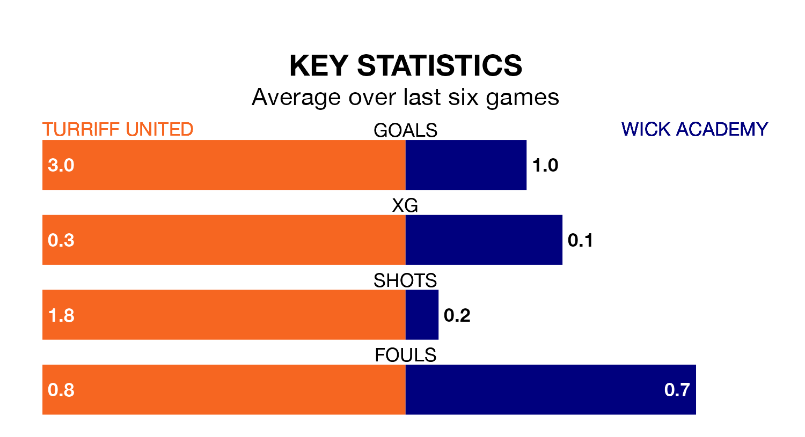

Turriff United host Wick Academy in Saturday's match at the Haughs looking to bounce back from defeat last time out in Highland and Lowland Football Leagues.
Turriff, who sit 16th in the league after 18 games, fell to a 1-5 away defeat to Clachnacuddin on January 6.
They face a Wick Academy side who secured a draw in their last match, a 0-0 tie with Rothes, and who sit zero in the table.
With 45 goals in 18 games so far this season, Turriff are scoring more than average in the league with 2.5 goals per game. But they are conceding more than average too, letting in 34 goals at a rate of 1.9 per game.
Wick Academy, meanwhile, are below average scorers, with 1.1 goals per game, compared to a league average of 1.8. They have conceded 2.6 goals per game.
United are in mixed form in Highland and Lowland Football Leagues, with three wins and three losses from their last six games.
With no wins and three draws over that period, the away team's form is much worse – they have taken three points from 18, compared to the hosts' nine.
In the last five years, Turriff and Wick Academy have played each other on five occasions. Turriff won one of them and Wick Academy the other.
On average, Turriff scored 1.4 goals and Wick Academy 2.2 in those matches.
Their last meeting was on September 2, when Turriff won 5-1 away.
Updated: 15:34, 08/01/24